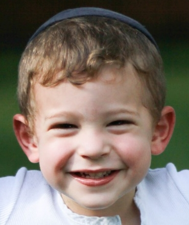
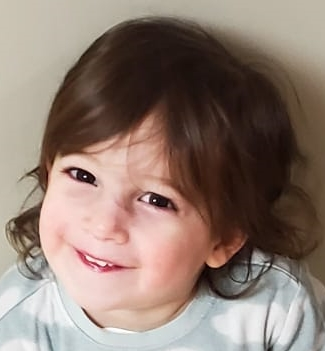

- Name: Naftali
- Also Known As: Tatty
- Occupation: Software engineeering student at Flatiron School
- Favorite foods: Pizza and steak (not together!)

- Name: Chavi
- Also Known As: Mommy
- Occupation(s): Full-time speech therapist, full-time mom
- Favorite foods: Potato kugel and acai bowls! (avocado toast?)

- Name: Elchonon
- Also Known As: Elch, Elchster, Chonz, Chonster, Shmooli Unga
- Occupation(s): Part-time artist, part-time handyman, part-time architect
- Favorite foods: Usually whatever Tatty is eating

- Name: Mordechai
- Also Known As: Mordy, Mords, Mudds
- Occupation(s): Usually demolishing whatever Elchonon's building at the time, part-time babysitter (for dolls! I know you got nervous!)
- Favorite Foods: Probably not what's for supper